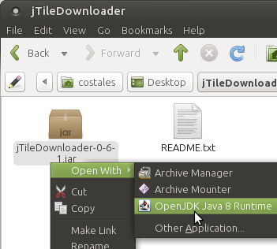
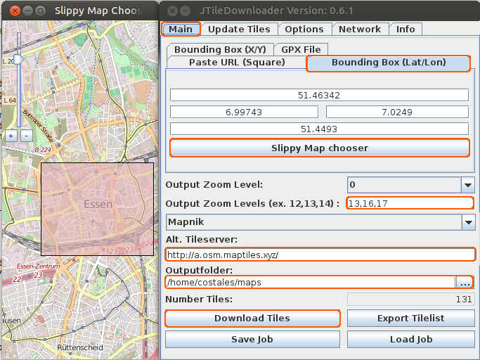

You can download maps from any map server and with any app!
We'll use jTileDownloader. You don't need to deal with depedences with this snap version ;)
Or you could use downloadosmtiles too in a Terminal.
jTileDownloader is a java aplication
~$sudo apt-get install openjdk-8-jdk unzip
Check here you're downloading the last version
~$cd ~
~$wget http://svn.openstreetmap.org/applications/utils/downloading/JTileDownloader/trunk/release/jTileDownloader-0-6-1.zip
~$unzip jTileDownloader-0-6-1.zip
~$rm jTileDownloader-0-6-1.zip
~$cd jTileDownloader
~$chmod +x jTileDownloader-0-6-1.jar
Use your file browser to open ~/jTileDownloader/jTileDownloader-0-6-1.jar with java:
Slippy Map chooser > Choose the area to download.
Please, avoid to select so big areas.
Output Zoom Levels: You can download different maps in several times.
We would recommend you a zoom 16,17 for cities and a zoom 13 for not cities.
Map: Choose the map. A few of them are forgiven, OpenCycleMap and ThunderForest are working.
Outputfolder: Download folder, recommended maps.
And just click on Download Tiles button.
Move that maps from PC to ~/Downloads into the phone.
Then move it to the final folder with the phone Terminal:
~$mv ~/Downloads/maps ~/.local/share/navigator.costales
Open uNav and go to Settings. Choose Offline maps:
Remember, this will allow offline maps, but not offline routing.
Tip: If you don't see the map, you didn't download that zoom. FYI, when you click on map or search a place, the zoom is 17 and you should see that downloaded map.